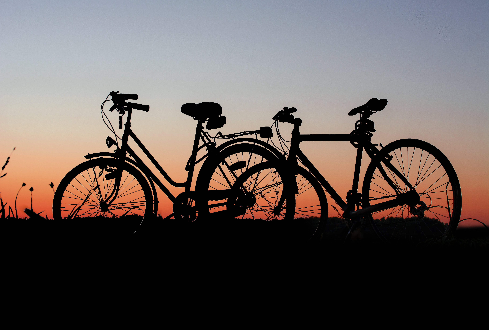

H1 Title

Welcome, your ultimate destination for all things biking and bike routes! Whether you're a seasoned cyclist or a beginner looking to explore the world on two wheels, we've got you covered with a wealth of content dedicated to the thrilling world of bicycles. We believe in the transformative power of cycling – from the wind in your hair on an open road to the joy of discovering new bike routes and scenic trails. Our platform is designed to be your go-to resource for everything related to bikes, offering a seamless blend of information, inspiration, and community engagement. Explore our curated collection of in-depth bike reviews, where we highlight the latest models, gear, and accessories to help you make informed choices on your cycling journey. Dive into our comprehensive guides on maintenance and tips to keep your bike in top condition for all your adventures. But we're not just about the bikes – we're passionate about the experience. Discover breathtaking bike routes and trails that take you through picturesque landscapes, urban cityscapes, and hidden gems. From beginner-friendly paths to challenging mountain trails, find the perfect route to suit your skill level and preferences. Join our vibrant community of cyclists, sharing stories, tips, and recommendations. Connect with fellow biking enthusiasts, and let the collective knowledge of our community enhance your cycling experience. We're more than just a website – we're a celebration of the cycling lifestyle. Get ready to pedal into a world of excitement, inspiration, and camaraderie. Let the adventure begin!